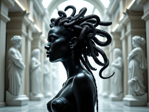

Body guard
Code Name: Black Medusa
Filename: Mia D'Oussa
Specialty: Interior decorating
Birthplace: Cité Soleil, Haïti
Mia comes from a long line of Voodoo priestesses. She harnessed the dark powers to turn herself into a living medusa, turning her rastas into pythons and her eyes into a mesmerizing mind trap that turns its victims into marble. This unusual talent makes her an unsuspecting bodyguard under the cover of a classical sculptor.

She grew up in a hut with her familly to living a lavish lifestyle in the metropolis of Montreal. Her rise to power is due to her prestigious patron, who just happens to be the wealthiest man in the city.
"When she gets those crazy eyes, best look away and get out while you still can" - One lucky guy